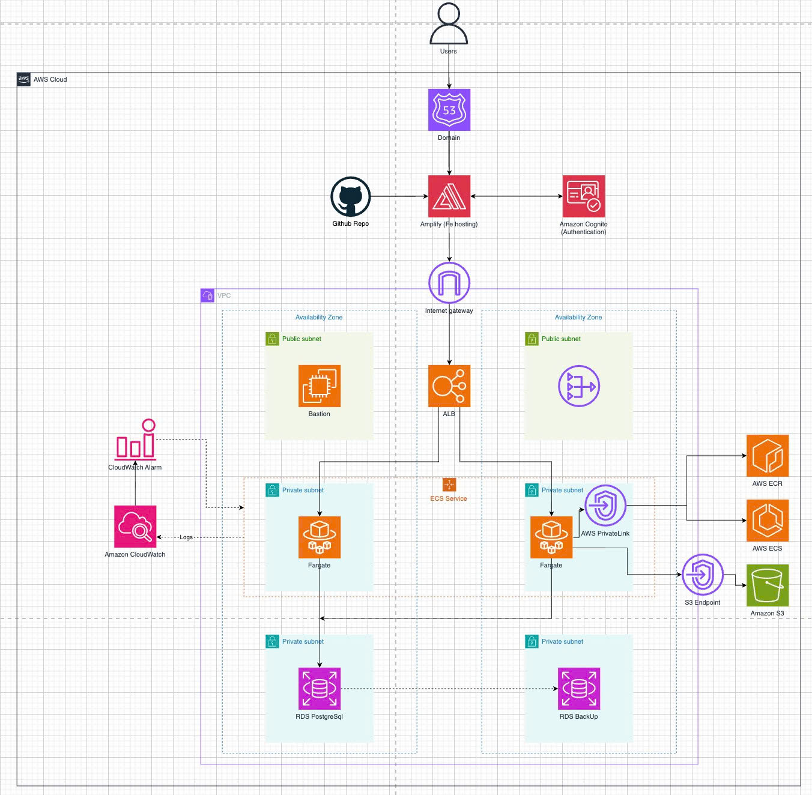

Bản đề xuất
Ứng dụng Quản lý Chi tiêu Cá nhân (PEM)
1. Tổng quan và mục tiêu dự án
Ứng dụng Quản lý Chi tiêu Cá nhân (Personal Expense Manager – PEM) là một web application hoàn chỉnh được xây dựng nhằm giải quyết bài toán thực tế: giúp người dùng theo dõi, phân tích và kiểm soát tình hình tài chính cá nhân một cách trực quan và hiệu quả. Theo khảo sát, hơn 60% người Việt Nam chưa có thói quen theo dõi chi tiêu một cách hệ thống, dẫn đến khó kiểm soát tài chính cá nhân và tiết kiệm kém hiệu quả.
Dự án được xây dựng hoàn toàn trên nền tảng AWS, thể hiện khả năng tích hợp các dịch vụ đám mây vào sản phẩm thực tế và minh chứng cho kiến thức đã tích lũy trong 3 tuần học AWS Services. Mục tiêu cốt lõi của dự án:
- Giúp người dùng ghi chép thu nhập và chi tiêu một cách nhanh chóng, dễ dàng.
- Phân loại giao dịch theo danh mục để phân tích cơ cấu chi tiêu.
- Cung cấp báo cáo thống kê trực quan giúp người dùng hiểu rõ tình hình tài chính.
- Cảnh báo khi chi tiêu có nguy cơ vượt ngân sách đã đặt ra.
- Hỗ trợ quản lý nhiều tài khoản tài chính (tiền mặt, ngân hàng, thẻ tín dụng…).
2. Kiến trúc công nghệ và hạ tầng AWS
Chi tiết Tech Stack:
| Tầng / Thành phần |
Công nghệ và dịch vụ sử dụng |
| Frontend Framework |
Next.js 14 (App Router), TypeScript |
| Frontend UI |
Tailwind CSS, Shadcn/ui component library |
| Frontend Charts |
Chart.js với react-chartjs-2 wrapper |
| Frontend State |
TanStack Query (React Query) v5 |
| Backend Framework |
NestJS (Node.js), TypeScript |
| Backend ORM |
TypeORM với migration và entity |
| Backend Validation |
class-validator, class-transformer |
| Backend Documentation |
Swagger/OpenAPI (@nestjs/swagger) |
| Database |
PostgreSQL 15 trên AWS RDS (db.t3.micro) |
| Caching |
Redis 7 trên AWS ElastiCache (cache.t3.micro) |
| Authentication |
AWS Cognito User Pool + JWT |
| File Storage |
AWS S3 (Standard storage class) |
| Email Service |
AWS SES (Simple Email Service) |
| Serverless |
AWS Lambda (Node.js 20.x runtime) |
| Scheduling |
Amazon EventBridge (CloudWatch Events) |
| Frontend Hosting |
AWS Amplify + CloudFront CDN |
| Backend Hosting |
AWS ECS Fargate (serverless container) |
| Container Registry |
Amazon ECR (Elastic Container Registry) |
| Load Balancer |
AWS Application Load Balancer (ALB) |
| Networking |
AWS VPC, Private/Public Subnets, NAT Gateway |
| CI/CD |
AWS CodePipeline + CodeBuild + CodeDeploy |
| Monitoring |
Amazon CloudWatch (logs, metrics, alarms) |
| Testing |
Jest, Supertest, Testing Library |
| Version Control |
Git + GitHub |
Sơ đồ kiến trúc hệ thống trên AWS:

Kiến trúc hệ thống: Next.js (Amplify/CloudFront) → ALB → ECS Fargate (NestJS) → RDS PostgreSQL / ElastiCache Redis / S3, với Lambda + EventBridge xử lý background job, Cognito xác thực, CodePipeline CI/CD, CloudWatch monitoring.
3. Thiết kế cơ sở dữ liệu PostgreSQL
Cơ sở dữ liệu PostgreSQL được thiết kế theo nguyên tắc chuẩn hóa đến dạng chuẩn 3NF (Third Normal Form), đảm bảo tính nhất quán dữ liệu và hiệu suất truy vấn tốt.
| Tên bảng |
Các cột chính |
Mục đích |
| users |
id (UUID PK), cognito_sub, email, full_name, avatar_url, currency, timezone, created_at |
Lưu thông tin người dùng, liên kết với Cognito |
| accounts |
id (UUID PK), user_id (FK), name, type (ENUM), balance, currency, color, icon, is_active |
Quản lý các tài khoản tài chính của người dùng |
| categories |
id (UUID PK), user_id (FK), parent_id (FK tự tham chiếu), name, type (ENUM), icon, color, is_default |
Danh mục phân loại giao dịch, hỗ trợ phân cấp |
| transactions |
id (UUID PK), user_id (FK), account_id (FK), category_id (FK), amount, type (ENUM), description, date, receipt_url |
Ghi chép mọi giao dịch tài chính |
| budgets |
id (UUID PK), user_id (FK), category_id (FK), amount_limit, spent_amount, period_type (ENUM), start_date, end_date |
Thiết lập và theo dõi hạn mức ngân sách |
| budget_alerts |
id (UUID PK), budget_id (FK), alert_type (ENUM: 80%, 100%), sent_at, email_sent_to |
Lịch sử các email cảnh báo ngân sách đã gửi |
| report_exports |
id (UUID PK), user_id (FK), type (ENUM: PDF/EXCEL), s3_key, s3_url, expires_at, created_at |
Lưu trữ link download báo cáo đã xuất |
Các index quan trọng để tối ưu hiệu suất truy vấn:
idx_transactions_user_date trên transactions(user_id, date DESC)idx_transactions_category trên transactions(category_id, date)idx_budgets_active trên budgets(user_id, is_active, start_date, end_date)
4. Các chức năng chính
4.1. Xác thực người dùng (AWS Cognito)
- Đăng ký: Người dùng nhập họ tên, email, mật khẩu → Cognito gửi OTP 6 chữ số qua email → Xác thực OTP → Tài khoản kích hoạt → Tự động đăng nhập vào dashboard.
- Đăng nhập: Frontend gọi Cognito SDK (initiateAuth API) → Trả về AccessToken (1h), IdToken (1h), RefreshToken (30d) → Backend verify JWT qua Cognito JWKS endpoint.
- Quên mật khẩu: Nhập email → Cognito gửi mã xác thực → Nhập mã + mật khẩu mới → Cập nhật thành công.
4.2. Dashboard Tổng quan
Dashboard cung cấp cái nhìn tổng quan về tình hình tài chính trong kỳ hiện tại (mặc định: tháng hiện tại):
- Thẻ thống kê nhanh: Tổng Thu nhập (xanh lá), Tổng Chi tiêu (đỏ), Số dư ròng, Tổng tài sản.
- Biểu đồ cột: So sánh tổng thu nhập và chi tiêu theo từng tháng trong 6 tháng gần nhất. Dữ liệu cache trên Redis với TTL 10 phút.
- Biểu đồ tròn: Hiển thị tỷ lệ chi tiêu theo từng danh mục kèm legend.
- Giao dịch gần nhất: Hiển thị 5 giao dịch mới nhất với link “Xem tất cả”.
4.3. Quản lý Tài khoản Tài chính
- Danh sách tài khoản: Hiển thị theo dạng thẻ (card) với icon, tên, loại, số dư, nút hành động.
- Thêm tài khoản mới: Tên, Loại (Ví tiền mặt / Ngân hàng / Thẻ tín dụng / Ví điện tử / Đầu tư), Số dư ban đầu, Đơn vị tiền tệ, Màu sắc, Icon.
- Thẻ tổng hợp: Tổng tài sản = Tổng số dư dương – Tổng nợ thẻ tín dụng.
4.4. Quản lý Giao dịch
Giao dịch được chia thành 3 loại: Thu nhập (Income), Chi tiêu (Expense) và Chuyển tiền (Transfer).
- Danh sách giao dịch: Sắp xếp theo ngày giảm dần, phân nhóm theo ngày.
- Thêm giao dịch: Tab chọn loại, nhập số tiền, chọn danh mục, chọn tài khoản, chọn ngày giờ, ghi chú, upload hóa đơn (trực tiếp lên S3 qua presigned URL).
- Bộ lọc nâng cao: Khoảng thời gian, Loại giao dịch, Danh mục, Tài khoản, Khoảng số tiền, Tìm kiếm full-text.
4.5. Quản lý Danh mục
- Danh mục chi tiêu mặc định: 🍽️ Ăn uống, 🚗 Di chuyển, 🛒 Mua sắm, 🏠 Nhà ở, 💊 Y tế, 🎓 Giáo dục, 🎬 Giải trí, 💝 Gia đình & Bạn bè, 💳 Tài chính.
- Danh mục thu nhập mặc định: 💰 Lương, 📈 Đầu tư, 🏢 Kinh doanh, 🎁 Khác.
- Danh mục tùy chỉnh: Người dùng có thể tạo danh mục riêng với tên, loại, danh mục cha, icon (200+ emoji), và màu sắc.
4.6. Quản lý Ngân sách (Budget)
- Tạo ngân sách: Chọn danh mục chi tiêu, đặt hạn mức, chọn kỳ (Hàng tháng / Hàng tuần / Tùy chỉnh), Bật/Tắt trạng thái.
- Theo dõi tiến độ: Thanh tiến trình với mã màu (<70% xanh, 70-90% vàng, 90-100% cam, >100% đỏ).
- Hệ thống cảnh báo AWS Lambda + SES: Lambda function được trigger bởi EventBridge mỗi giờ → Truy vấn ngân sách đang active có mức sử dụng ≥80% → Gửi email HTML qua SES → Ghi log vào bảng
budget_alerts để tránh trùng lặp. Cũng kiểm tra và gửi cảnh báo 100% (vượt ngân sách).
4.7. Báo cáo Thống kê và Xuất file
- Báo cáo tổng hợp: Biểu đồ đường xu hướng thu/chi hàng ngày, bảng tóm tắt, phân tích theo danh mục, so sánh với kỳ trước.
- Xuất PDF: Tạo bằng
pdfkit trên NestJS, bao gồm header người dùng, biểu đồ SVG, danh sách giao dịch.
- Xuất Excel: Tạo bằng
exceljs với nhiều sheet (Tóm tắt, Giao dịch đầy đủ, Thống kê theo danh mục).
- File upload lên S3 với presigned URL (hiệu lực 1 giờ), lưu vào bảng
report_exports.
4.8. Cài đặt hồ sơ cá nhân
- Thông tin cá nhân, upload ảnh đại diện (lên S3), đơn vị tiền tệ mặc định, múi giờ, đổi mật khẩu, bật/tắt nhận email cảnh báo ngân sách.
5. Triển khai hệ thống lên AWS Production
5.1. Frontend – AWS Amplify + CloudFront
- Next.js 14 deploy lên AWS Amplify, tự động detect và build khi push code lên branch
main.
- CloudFront CDN phân phối nội dung toàn cầu từ các edge location gần người dùng nhất.
- Biến môi trường cấu hình trực tiếp trong Amplify Console (Cognito Pool ID, API endpoint).
5.2. Backend – AWS ECS Fargate
- Dockerfile multi-stage để tối ưu kích thước image.
- Docker image push lên ECR với tag theo git SHA.
- ECS Task Definition: 0.5 vCPU, 1GB RAM, env vars từ Secrets Manager.
- Auto-scaling dựa trên CPU utilization (scale-out >70%, scale-in <30%).
- Rolling deployment đảm bảo zero-downtime.
5.3. Database – Amazon RDS PostgreSQL
- db.t3.micro cho dev, db.t3.small cho production.
- 20GB SSD với Storage Autoscaling.
- Multi-AZ Deployment với tự động failover (<60 giây).
- Backup tự động hàng ngày lúc 3h sáng, lưu 7 ngày, hỗ trợ Point-in-Time Recovery (PITR).
- Đặt trong private subnet, mã hóa storage với AWS KMS.
5.4. Caching – Amazon ElastiCache Redis
- Redis 7 single node (cache.t3.micro) trong private subnet.
- Cache key strategy:
user:{userId}:dashboard:stats:{period} với TTL 10 phút.
- Tự động invalidate khi có thay đổi giao dịch.
6. CI/CD Pipeline với AWS CodePipeline
Pipeline gồm 4 stages chính:
- Source: Kết nối GitHub, tự động trigger khi push code vào
main.
- Build (CodeBuild): Chạy unit test (
jest --coverage), build Docker image, tag & push lên ECR.
- Deploy to Staging: Tự động deploy lên ECS staging, chạy smoke test.
- Deploy to Production: Chờ phê duyệt thủ công, sau đó deploy lên ECS production.
7. Monitoring với Amazon CloudWatch
CloudWatch Dashboard Metrics:
- ECS: CPUUtilization, MemoryUtilization, số task đang chạy.
- ALB: RequestCount, TargetResponseTime, HTTPCode_Target_5XX_Count.
- RDS: DatabaseConnections, CPUUtilization, FreeStorageSpace.
- Lambda: Invocations, Duration, Errors.
- ElastiCache: CacheHits, CacheMisses, CurrConnections.
CloudWatch Alarms:
- ECS CPU > 80% trong 5 phút → Gửi SNS email thông báo.
- RDS Connections > 80 → Cảnh báo connection pool gần đầy.
- ALB HTTP 5xx > 10 errors/phút → Cảnh báo lỗi nghiêm trọng backend.
- Lambda Error Rate > 5% → Cảnh báo budget checker gặp vấn đề.
8. Đánh giá hiệu suất hệ thống
| Chỉ số |
Kết quả đo được |
Mục tiêu |
| API Response Time (p50) |
45ms |
< 200ms ✅ |
| API Response Time (p95) |
120ms |
< 500ms ✅ |
| API Response Time (p99) |
280ms |
< 1000ms ✅ |
| Dashboard load time (có cache) |
180ms |
< 300ms ✅ |
| Dashboard load time (cold) |
650ms |
< 1000ms ✅ |
| Unit Test Coverage |
78.3% |
> 75% ✅ |
| Integration Tests Pass Rate |
100% |
100% ✅ |
| RDS Max Connections (đồng thời) |
32/100 |
< 80 ✅ |
| ECS CPU Utilization (tải bình thường) |
18% |
< 70% ✅ |
| ElastiCache Hit Rate |
87.4% |
> 80% ✅ |
| S3 Upload Success Rate |
99.98% |
> 99.9% ✅ |
| Lambda Execution Duration (trung bình) |
1.2s |
< 3s ✅ |